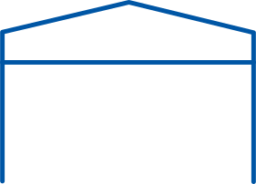
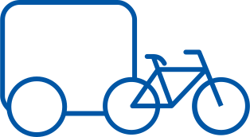

100K Donations
Creating a modern sustainable donation model
Problem
New York City is one of the most densely populated and wealthiest regions in the United States. Yet Goodwill’s penetration of the potential donor base is at best very shallow. A recent combined effort with Uber showed how less than 7% of donation pick up requests were satisfied. Similarly, our own internal statistics suggest that our donor base represents a mere 6% of the Manhattan population.
Objective
- Introduce the concepts of diversity and redundancy to our current and future donation models
- Create new donation models using innovative technologies
- Use Data-science to evaluate the effectiveness of all donation streams
Goodwill First
Our initiatives are driven by the Shortest Path to Donation metric. We want Goodwill to be the first option that comes to mind when donating and furthermore, to be the first there when it actually happens.
SMADC (Smart Mobile ADC)

